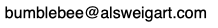

Automate the Boring Stuff with Python
By Al Sweigart. Over 500,000 copies sold. Free to read under a Creative Commons license.

Amazon | Barnes and Nobles | Powell's | Bookshop.org | Goodreads | Kobo | Thriftbooks
About the Book
“The best part of programming is the triumph of seeing the machine do something useful. Automate the Boring Stuff with Python frames all of programming as these small triumphs; it makes the boring fun.”
-Hilary Mason, Data Scientist and Founder of Fast Forward Labs
“I'm having a lot of fun breaking things and then putting them back together, and just remembering the joy of turning a set of instructions into something useful and fun, like I did when I was a kid.”
“If you are new to Python, get this book. ... If you lie in the category of experienced Pythonistas and haven’t read this book, you should also take out some time and read it.”
“Valuable to have on your shelf...an extremely useful book.”
—Kids, Code, and Computer Science Magazine
"One of the best books for learning Python."
—Giles McMullen-Klein, FlickThrough Reviews
If you’ve ever spent hours renaming files or updating hundreds of spreadsheet cells, you know how tedious tasks like these can be. But what if you could have your computer do this work for you?
In this fully revised third edition of Automate the Boring Stuff with Python, you’ll learn how to use Python to write programs that do in minutes what would take you hours to do by hand—no prior programming experience required. Early chapters will teach you the fundamentals of Python through clear explanations and engaging examples. You’ll write your first Python program; work with strings, lists, dictionaries, and other data structures; then use regular expressions to find and manipulate text patterns.
Once you’ve mastered the basics, you’ll tackle projects that teach you to use Python to automate tasks like:
- Searching the web, downloading content, and filling out forms
- Finding, extracting, and manipulating text and data in files and spreadsheets
- Copying, moving, renaming, or compressing saved files on your computer
- Splitting, merging, and extracting text from PDFs and Word documents
- Interacting with applications through custom mouse and keyboard macros
- Managing your inbox, unsubscribing from lists, and sending email or text notifications
Table of Contents
- Introduction
- Chapter 1 - Python Basics
- Chapter 2 - if-else and Flow Control
- Chapter 3 - Loops
- Chapter 4 - Functions
- Chapter 5 - Debugging
- Chapter 6 - Lists
- Chapter 7 - Dictionaries and Structuring Data
- Chapter 8 - Strings and Text Editing
- Chapter 9 - Text Pattern Matching with Regular Expressions
- Chapter 10 - Reading and Writing Files
- Chapter 11 - Organizing Files
- Chapter 12 - Designing and Deploying Command Line Programs
- Chapter 13 - Web Scraping
- Chapter 14 - Excel Spreadsheets
- Chapter 15 - Google Sheets
- Chapter 16 - SQLite Databases
- Chapter 17 - PDF and Word Documents
- Chapter 18 - CSV, JSON, and XML Files
- Chapter 19 - Keeping Time, Scheduling Tasks, and Launching Programs
- Chapter 20 - Sending Email, Texts, and Push Notifications
- Chapter 21 - Making Graphs and Manipulating Images
- Chapter 22 - Recognizing Text in Images
- Chapter 23 - Controlling the Keyboard and Mouse
- Chapter 24 - Text-to-Speech and Speech Recognition Engines
- Appendix A - Installing Third-Party Packages
- Appendix B - Answers to the Practice Questions
(The 1st edition and 2nd edition are still available.)
Automate the Boring Stuff with Python - Workbook

Buy from Publisher (Free ebook!) Read Online for Free
Amazon | Barnes and Noble | Bookshop.org | Powell's | Kobo | Thriftbooks | Goodreads
A companion to Automate the Boring Stuff with Python, Third Edition. This workbook transforms Al Sweigart’s best-selling guide from a reading experience into a coding experience. Following Automate the Boring Stuff with Python chapter by chapter, this workbook will help you turn concepts into muscle memory through carefully designed exercises, projects, and real Python scripts.
Every concept from Automate is reinforced through carefully sequenced questions, exercises, and projects that help you think like a programmer and prove to yourself that you really get it.
At the end of each chapter, you’ll tackle miniprojects that bring everything together. Whether you’re renaming files, scraping websites, converting text to speech, modifying spreadsheets, or sending emails, you’ll build scripts that do real work. Fun projects like image generators and word games are in the mix too, not just boring stuff.
Review eBook Offer: If you have made at least $50 in purchases in an Amazon account and can write reviews, you may request a review ebook copy in exchange for writing an honest review of the book. Fill out this form to be contacted about receiving a review copy of Automate the Boring Stuff -- Workbook
More news and content are available on my Python blog.
Online Video Course
This video course follows much (though not all) of the content of the 1st edition of the book. Use this link to apply a 70% discount code. You can preview the first 15 course videos for free on YouTube.
Request a Review Copy
If you have made at least $50 in purchases in an Amazon account and can write reviews, you may request a review ebook copy in exchange for writing an honest review of the book. Fill out this form to be contacted about receiving a review copy of Automate the Boring Stuff with Python, 3rd Edition
Additional Content
Download the files used in this book.
Donate / Write a Review
There are several ways you can support the author:
Other Books by the Author
Al Sweigart has been writing programming books (mostly Python, mostly for beginners) since 2009. All of them are free to read online under a Creative Commons license at https://inventwithpython.com.


About the Author
Al Sweigart is a software developer, author of several programming books, and a Fellow of the Python Software Foundation. He is the author of several programming books for beginners, including Invent Your Own Computer Games with Python, The Big Book of Small Python Projects, and Beyond the Basic Stuff with Python (all from No Starch Press). He is an international speaker at several PyCon conferences. His website is https://inventwithpython.com.
Reports that Al is an AI have been grossly exaggerated.
